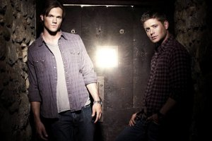

Сюжетная линия «Сверхъестественного» исчерапал свои возможности …или нет?

10 сезонов «Сверхъестественного» зрители по всему миру смотрели на одном дыхании. Захватывающие сюжеты не могут оставить равнодушным даже не фанатов подобных экранизаций. Однако огромное количество самых разных демонов и прочей нечисти, казалось бы, исчерпали себя. Соответственно и сюжеты серий более разнообразить не получится. Ан нет! Сценаристы уготовили для братьев Винчестеров новые приключения, способные удивить искушенного зрителя.
Как сообщают средства массовой информации в новом — 11-м сезоне, который обещает появиться на телеэкранах осенью 2015 года, будет огромное множество флэшбеков, представленных в самых разных форматах и уровнях. Также сейчас уже известно, что сюжет возвратиться к своим истокам. А именно дорожному образу жизни Сэма и Дина и случайным происшествиям, заставляющим главных актеров спасать мир от сверхъестественной опасности.
Помимо этого следует вспомнить, что братьям Винчестерам предстоит сражаться с самой Тьмой. Говоря о первой серии, названной «Малышка» Джереми Картер, сценарист сериала, приоткрыл завесу нововведений. Теперь зрители, наконец, смогут увидеть братьев несколько минут в обычной жизни. После посадки в свой любимый автомобиль Винчестеры не исчезнут с экранов, съемочная группа покажет, что же будет дальше, пусть и не долго. События - весь эпизод и действия Винчестеров после борьбы с нечистью разворачиваются в Импале.
Главный герой сериала, которого играет Дженсен Эклз, весьма обеспокоен планами сценаристов. События, которые разворачиваются на протяжении некоторого времени в замкнутом автомобиле, вызывают у него ассоциации с фильмом «Лок». Он очень жалеет, что на съемочной площадке не окажется Тома Харди – главного героя названного фильма. Видимо «Сверхъестественный» Дин считает, что актер смог бы поддержать Дженсена со стороны своего опыта подобных съемок.
Хотелось бы напомнить, что фанаты уже выставили часы к наступлению новых сезонов. Запланированной датой названо 7 октября 2015 года. На сегодняшний день сериал «Сверхъестественное» считается самым старым и долгожданным для телеканала «СВ». Ведь с момента выхода самого первого сезона прошло не менее 10-ти лет. В социальных сетях даже подтвердили тот факт, что во время трансляции последней серии 9-го сезона у экранов находилось более двух миллионов человек. При этом директор названного телеканала уже неоднократно намекал на то, что сворачивать фантастический сериал руководство не собирается. Поэтому стоит надеяться, что за долгожданным 11-м сезоном появится и 12-й!